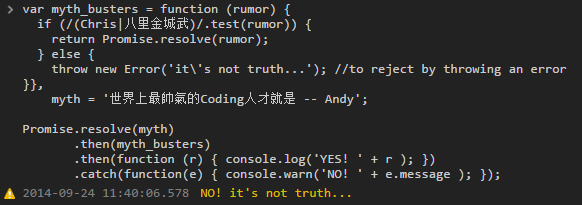
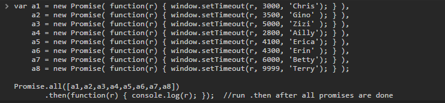
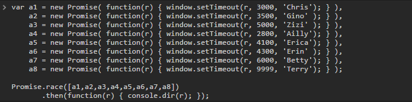
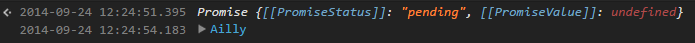

Promise
Chris Chu
What is Promise?
MDN
The Promise interface represents a proxy for a value not necessarily known when the promise is created. It allows you to associate handlers to an asynchronous action's eventual success or failure. This lets asynchronous methods return values like synchronous methods: instead of the final value, the asynchronous method returns a promise of having a value at some point in the future.
反正就是讓異步化的程序處理的跟普通程序一樣無腦 ....當然不只這樣!!
How it looks like?
function runProjectProcess( 黃道吉日 ) {
var steps = kickOff( 黃道吉日 ) //async function
.then( assignAPoorFE )
.then( thePoorFECheckFacebookFirst )
.then( thePoorFEChatOnLine )
.then( thePoorFEBeginDoProject )
.then( thePoorFEFoundSomethingWrongInTheMockUp )
.catch( thePoorFETearfulSwallow ) //if any promise above is rejected...
.then( theProjectHaveAHappyEnding );
}
kinda like $.ajax( ).done( ).error( )
Get Started
- 3 States
- 2 Key Functions
3 States
- pending (unresolve)
- resolved
- rejected
Key Functions
- .then
- .catch
starting by new Promise instance
var promise = new Promise(async_func);
function async_func ( resolve_callback , reject_callback ) {
//do something...
return resolve_callback( any_obj_you_like );
}
or by Promise static functions...
var promise = Promise.resolve( any_obj_you_like );
Example of new an instance
var give_me_a_new_girlfriend = new Promise(
function (resolve, reject) {
return ( Math.random() < 0.5 ) ? resolve('Angelababy') : reject('如花');
}
);
console.log(give_me_a_new_girlfriend);
//Promise {[[PromiseStatus]]: "resolved", [[PromiseValue]]: 'Angelababy'}
//Promise {[[PromiseStatus]]: "rejected", [[PromiseValue]]: '如花'}
Example of static function
var raise_chris_salary = Promise.resolve('300%'),
give_chris_3_days_PTO = Promise.reject('NO, but 10!');
console.log(raise_chris_salary, give_chris_3_days_PTO);
//Promise {[[PromiseStatus]]: "resolved", [[PromiseValue]]: "300%"}
//Promise {[[PromiseStatus]]: "rejected", [[PromiseValue]]: "NO, but 10!"}
the basic state when the promise was created
it would not execute .then callbacks or .catch callbacks
execute the .then callback when the state from pending to resolved
can accept more then one callback
would skip .then callbacks, until .catch callback.

throw an error would become rejected state
can't change state after the promise has been resolved or rejected.
and can't resolve twice.
恭喜各位成為Promise高手！
Congrats! you're an expert of Promise now.
not enough!?
one more example
var step1 = new Promise(function (res, rej) {
var timer = function( quote ) { return res(quote); };
window.setTimeout( timer, 5000, 'Chris the best' );
}), step2 = step1.then(function(word) {
console.log('STEP2: Yes! ' + word);
return Promise.resolve('GREED ID GOOD 9999999');
}), step3 = step2.then(function(not_important) {
console.log('STEP3: ' + not_important);
return Promise.reject('NO STEP4.....');
}), step4 = step3.then(function(data) {
console.log('STEP4: ' + 'THIS LINE WOULD NOT DISPLAY');
}), errorHandling = step4.catch(function(error_content) {
console.log('CATCH: ' + error_content);
return Promise.resolve('BUG FIXED!');
}), step5 = errorHandling.then(function(fixed) {
console.log('STEP5: ' + fixed);
});
How would it be if it applied on AFF?
endless IE issues...
more functions
Promise.all

logged the array after 9999ms
Promise.race


logged after the first promise is done